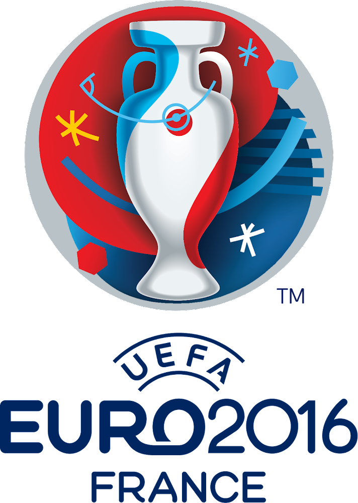
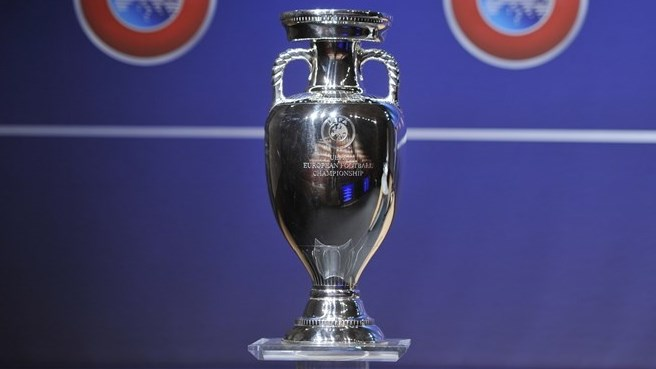

| Európa-bajnokság győztesek |
| Év |
Helyszín |
Győztes |
| 2020 |
Európa |
Olaszország |
| 2016 |
Franciaország |
Portugália |
| 2012 |
Lengyelország és Ukrajna |
Spanyolország |
| 2008 |
Ausztria és Svájc |
Spanyolország |
| 2004 |
Portugália |
Görögország |
| 2000 |
Belgium és Hollandia |
Franciaország |
| 1996 |
Anglia |
Németország |
| 1992 |
Svédország |
Dánia |
| 1988 |
NSZK |
Hollandia |
| Eb győzelmi toplista |
| Toplistás helyezés |
Csapat neve |
Eb győzelmek száma |
| 1. |
Németország |
3 |
| 1. |
Spanyolország |
3 |
| 2. |
Olaszország |
2 |
| 2. |
Franciaország |
2 |
| 3. |
Szovjetunió |
1 |
| 3. |
Portugália |
1 |
| 3. |
Csehország |
1 |
| 3. |
Hollandia |
1 |
| 3. |
Dánia |
1 |
| 3. |
Görögország |
1 |